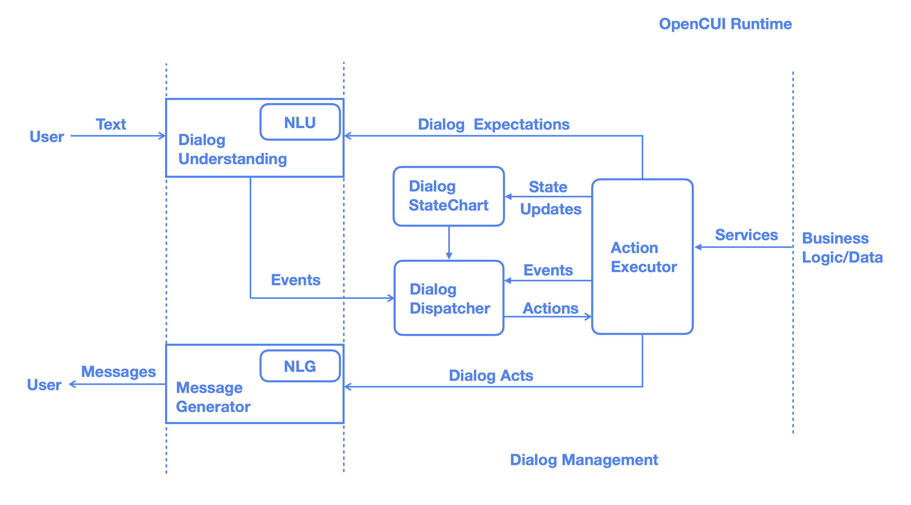
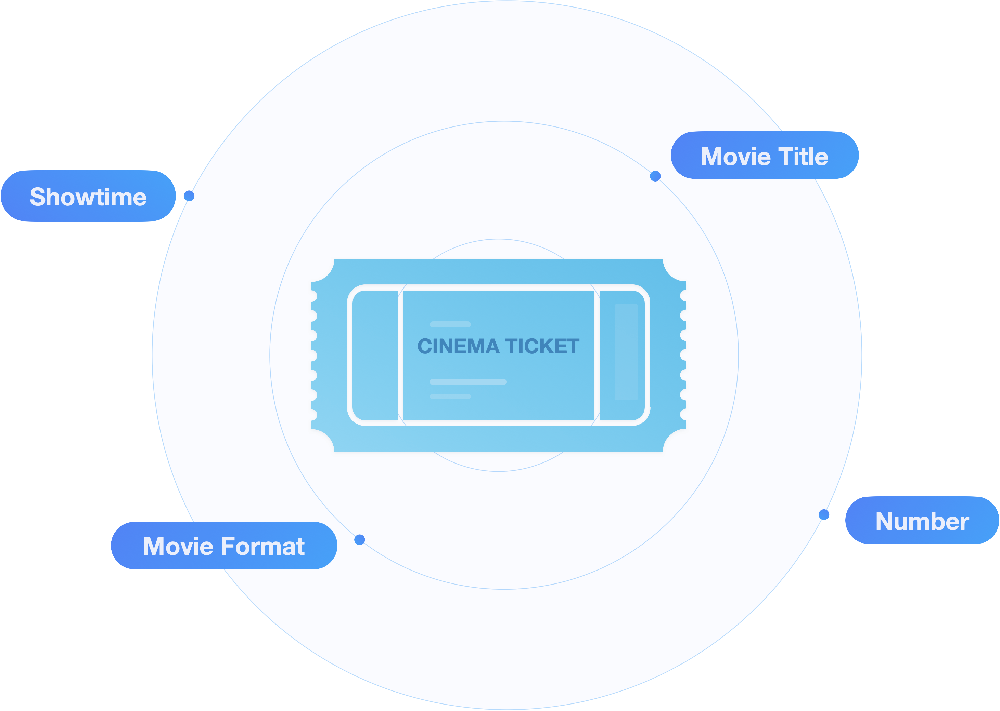
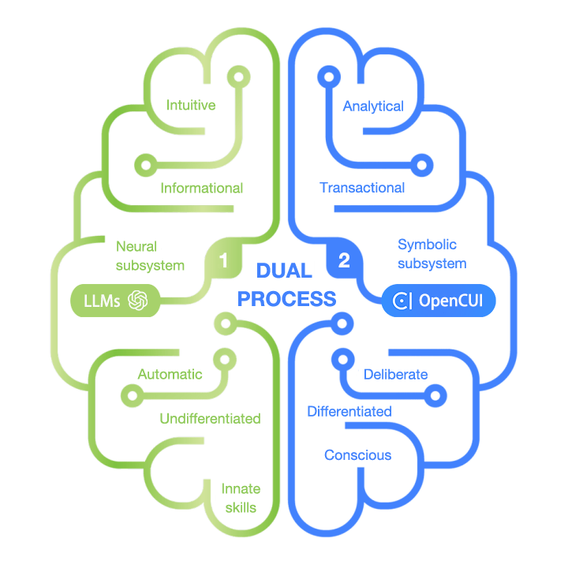

Never Build an Agent from Scratch
A component-based platform lets conversation designers and developers come together to build conversational experiences that get results.
A component-based platform lets conversation designers and developers come together to build conversational experiences that get results.

By separating language perception, interaction logic, and backend services, a three-layer architecture naturally delivers a consistent user experience across languages while enabling seamless transitions between web, mobile, and chat platforms.
Conversation flows offer precision, but enumerating all possible flows is impractical. Prompt engineering provides broad coverage but lacks control. Statechart-based interaction logic, built by annotating service schemas, achieve both through this factorized and declarative approach.


No LLM achieves 100% accuracy on standard function-calling datasets, let alone for custom use cases. By decomposing dialogue understanding into manageable subproblems, leveraging retrieval-augmented in-context learning using fine-tuned model for inference, and intelligently merging the solutions, our agentic dialogue understanding provides a cost-effective solution to achieve the accuracy required for production.
Sounds great, but how does it integrate with your existing system? With its modular design and open-architecture runtime, you can easily build extensions that connect seamlessly to your infrastructure—and beyond.

Seamlessly switch between software-engineered System 2, offering deterministic conversational services on APIs, and prompt-engineered System 1, utilizing retrieval-augmented generation for unstructured text. Our dual-process approach consistently delivers a cost-effective conversational experience, providing control for high-impact queries and coverage for the rest.